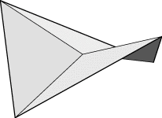
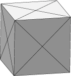
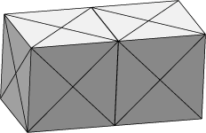
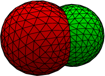
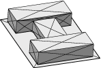
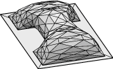
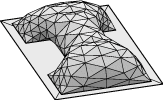
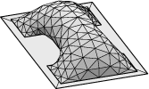
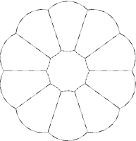
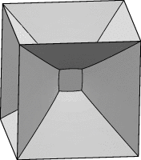

NOTE: Be sure the Evolver you are running is a recent version, dated May 2004 or later. Otherwise certain exercises in this workshop will not run as claimed. Evolver prints its version and date whenever you run it.

You should now have an Enter command: prompt. Evolver is controlled by an interactive command language. To those who want every user interface to be graphical, I say "Monkeys can use mice; humans use language." And a command language is necessary for writing scripts.
Enter command: help fixedThis actually extracts text from the HTML documentation, which is why the output looks kind of ragged sometimes. It will also give a list of keywords containing your term. Help also recognizes all the variable and other names that you have defined. Note: if your help topic contains spaces, you need to enclose it with quotes, e.g.
help "fixed facet"If help complains that it can't find the help files, check your EVOLVERPATH and make sure the HTML files are on it.
Start graphics with the s command. This should bring up a graphics window in the upper left hand corner of your screen. The initial view has the X axis out of the screen, the Y axis to the right, and the Z axis vertical. You can rotate the surface by dragging with the mouse with the left button down.
Left button mouse modes: Dragging the mouse in the graphics window with the left button down has various modes, which can be changed by hitting a key with the mouse in the graphics window:
Picking: Clicking with the right mouse button on the surface in the graphics window will "pick" a vertex, edge, or facet that lies under the tip of the pointer. The numbers of the picked elements are printed in the terminal window, so you can see what you have been successful in picking. Try picking various things. NOTE: By default, Evolver re-numbers in order the elements it reads from the datafile, so the number shown by picking may not be the same number as in the datafile. The original datafile number is kept in the element attribute original. To get Evolver to keep the original datafile numbers, start Evolver with the -i command line option, i.e. evolver -i quad.
Focus: One use for picking is to control the center of motion for rotation and zooming. Once you have picked a vertex, you can hit the F key with the mouse in the graphics window to make the picked vertex the focus of motion. Try it.
Other useful graphics mode keys: Various commands can be given by hitting keys while the mouse is in the graphics window. The most useful are these (case sensitive):
Graphics prompt: Back in the terminal window, you will notice that the s command leaves you with a graphics mode prompt. This is largely the legacy of the days before all this fancy interactive mouse stuff, but it can still be useful to make precise movements. Do h at the graphics prompt to get a help screen. Do q to get out of graphics mode back to command mode.
A very simple surface such as quad can be evolved using just two commands:
Enter command: g 0. area: 4.32660897515850 energy: 4.32660897515850 scale: 0.265795In the output, the first number is a repetition count for repeated commands. Then come the area and energy of the surface, which are the same here since we are modeling a soap film of unit surface tension and there are no other energies involved. The "scale" at the right is the multiplier of the gradient used to calculate the motion of the vertices. For minimizing area, the scale normally is around 0.1 or 0.2; much smaller values indicate the evolution is running into difficulties.
Many commands can be followed by a repetition count, which is particularly useful for the g command. Try g 5. Note that the energy is converging rapidly, which is understandable since at this point there is only one vertex free to move.
Refine the surface by giving the r command. Note this subdivides each triangle into four. Then evolve some more with g 20. You can refine and evolve to your heart's content, at least to the capacity of your computer. See how far you can refine and evolve and still have the graphics managable. Note that hitting e in the graphics window to turn off edge drawing makes the graphics much faster.
// quad.fe // simple skew quadrilateral vertices 1 0 0 1 fixed 2 2 0 0 fixed 3 2 2 0.5 fixed 4 0 2 0 fixed edges 1 1 2 fixed 2 2 3 fixed 3 3 4 fixed 4 4 1 fixed faces 1 1 2 3 4Comments are indicated by // or /*...*/ as in C. The list of vertices is given with one vertex per line, starting with the vertex number, followed by its coordinates. Then come the vertex attributes, with fixed indicating the vertex cannot move. In the edges section, each edge definition begins with the edge number, then the vertex numbers of its tail and head, followed by attributes. Fixed for an edge means that any vertices produced by refining the edge will also be fixed. The faces section lists the polygons that make up the surface. Each polygon is given as a closed loop of oriented edges (all the edges here are used in the positive direction, but if you used an edge in the negative direction, you would give its number as negative).


Start Evolver with datafile bubble2.fe and display graphics.
The v command shows that the target volumes of the bubbles
are different, just to make things nonsymmetric.
Try this sequence of commands:

g 5 refine edge where valence == 3 g 5 set body[1].facet color red set body[2].facet color green show facet where color == red show facet where color == green show facet r g 10 r g 20This shows a couple of commands that have an SQL-like syntax (for the non-cognoscenti, SQL is structured query languange, used with databases). The general syntax of this class of commands is
verb element-generator where-clauseSome common verbs are list, refine, delete, set, fix, unfix, and show. An element generator is either the name of a type of element (vertex, edge, facet, body), or an indexed element name for a single element, or a subsidiary set of elements of a single element (such as body[1].facet above). The where clause is optional; it is a boolean expression that selects a subset of the generated elements. The set syntax has some extra bits in it,
set element-generator attribute value where-clause
The various element attributes are described in the online documentation. The attributes used above are color and valence. The color of an edge or facet is one of sixteen colors: black, blue, green, cyan, red, magenta, brown, lightgray, darkgray, lightblue, lightgreen, lightcyan, lightred, lightmagenta, yellow, and white. These are actually synonyms for the numbers 0 through 15. The valence of a vertex is the number of adjacent edges; the valence of an edge is the number of adjacent facets, and the valence of a facet is its number of vertices.
It would be redundant to list the details of the whole command language here; I refer you to the online documentation of command syntax. Between the online documentation and the sample datafiles (*.fe) and sample script files (*.cmd), you should be able to get the hang of it.


g 5 r g 20

The triangulation here isn't too bad, but one could try improving it. There are lots of long skinny triangles; the u command flips around edges to try to make more equilateral triangles. This process is called equiangulation. Try it.Also notice the fixed edges on the contact line could use refinement. Try
refine edges where valence==1 and not no_refineThe no_refine attribute was put on the tabletop edges in the datafile to keep them from being refined by the r command; the refine command doesn't pay attention to no_refine unless you tell it to, as above.
Another useful grooming command is V (upper case, if you can't tell), for vertex averaging. It helps spread out bunched up vertices. Try it a couple of times.
I recommend doing a couple of alternating u's and V's whenever your
triangulation is looking a little ragged. After each r is a good
time, also.

Now you should be able to evolve and refine the bridge to a nice, smooth,
evenly triangulated surface.

string space_dimension 2A face is still a chain of edges, although the chain need not be closed, and a face is not triangulated when read in. The area of a face can be constrained by defining a body consisting of the one face and then fixing the volume of the body. See the sample string datafile flower.fe, and run flower.fe in Evolver. Try this evolution:
r g 5 r g 10 r g 10 read "zebra.cmd" zebra
